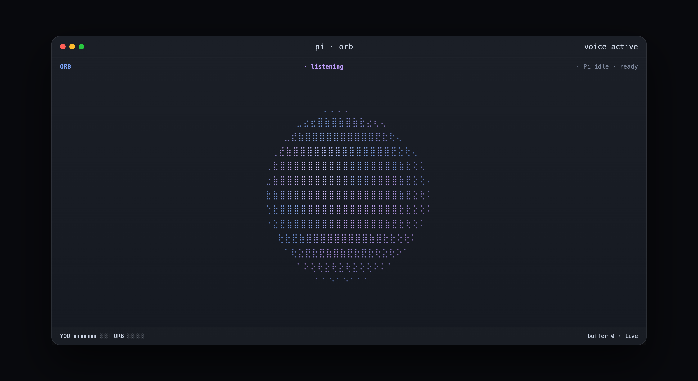

Say the goal
“Explore the project.” “Fix this test.” “Use Sonnet and focus on the parser.” Broad intent is enough.
Voice for the Pi coding harness
Orb is a conversational layer for Pi. Say what you want at a high level; it delegates, redirects, waits, and keeps you oriented while Pi does the coding.
Full duplex · Gemini Live or OpenAI Realtime · hardware-timed audio

Pi already knows how to inspect a repository, edit code, run commands, test changes, and explain results.
“Explore the project.” “Fix this test.” “Use Sonnet and focus on the parser.” Broad intent is enough.
It delegates complete tasks, can cancel a wrong turn, switch model or thinking level, and run direct shell controls when permitted.
The normal Pi screen remains yours. Type commands yourself, inspect tool output, or let the task run while you keep talking.
Orb waits instead of narrating. It comes back for outcomes, blockers, and decisions that actually need you.
Can you explore the project?
Sure — one sec.
Wait — use Sonnet and focus on the failing tests instead.
Got it.
When a sentence is not enough
Collect before sending. Build a long prompt, TODO list, spec, review notes, or migration plan together without occupying Pi's native editor.
Load and save files. Pull a project document into the scratchpad, refine it by voice or keyboard, then save it back. Project-scoped permissions are the default.
Dispatch exactly what matters. Send the whole document or a selected subset such as “the first three TODO items” directly to Pi.
Quiet by design. The Orb panel shows your turns, Orb's turns, and Orb-side actions. Pi's own log remains on the Pi screen where it already belongs.
Realtime without stealing the terminal
Hardware-timed audio. A small Go sidecar owns the device callback and an adaptive jitter buffer, independent of Pi's Node event loop.
Recoverable playback. If provider delivery starves briefly, Orb rebuilds a lead and resumes instead of remaining permanently choppy.
Configurable control. Cancellation, model changes, thinking, shell access, scratchpad reads/writes, UI, audio, providers, and the complete voice prompt are configurable.
Open source. Provider, Pi-control, scratchpad, audio, and rendering layers are separate and tested so contributors can extend them independently.
Install
pi install https://github.com/alainux/orb
pi
/voicemacOS / Linux
curl -fsSL https://raw.githubusercontent.com/alainux/orb/main/scripts/install.sh | sh
orbWindows PowerShell
iwr https://raw.githubusercontent.com/alainux/orb/main/scripts/install.ps1 -UseBasicParsing | iex
orb